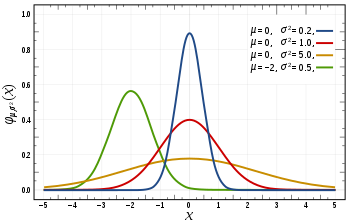
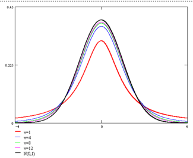
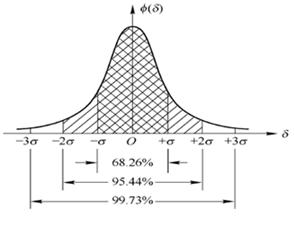
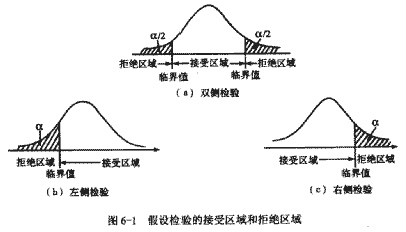
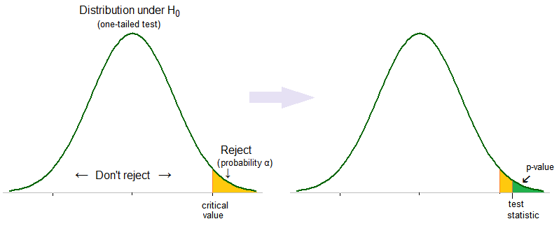

背景
在设计A/B测试时，总有一个无法避免的问题：实验数据的结果是样本数据的波动还是真实的数据提升？答案取决于数据的提升和样本量，需要使用数理统计的方法判断实验结果的科学性。
基础概念
由于数据分析需要比较多的概念，在本节统一做介绍 （有基础的可略过本节）
总体与样本
总体即研究对象的某项数量指标的全体。总体中个每个元素称为个体。在A/B测试中，我们产品的所有用户的某项指标构成总体，例如用户的付款转化率等。
实际应用中，通常总体的量级可能会非常大，不适于直接在总体上做实验并分析数据；或者不希望过多的用户参与到 A/B 测试中，避免对大部分用户造成打扰，所以一般做 A/B 测试都是使用小流量进行的，即流量划分这一步会决定哪部分流量进行实验，根据对这一部分流量的实验数据进行分析，将结论推广到全部流量。流量划分即通过抽样来从总体中划定实验范围的过程。
抽样，是指按照一定规则从总体中抽取若干个体进行观察试验，以推断总体的分布及特征等信息的方式。最常用的抽样方法是随机抽样，即从总体中随机抽取n个个体作为样本，使得每一个个体都有相同的概率被抽中。常用于个体间差异较小，且互相独立的情况。此外使用较多的还有分层抽样，即将个体按照某种特征或规则划分为不同的层，然后从不同的层中独立、随机地抽取样本，从而保证样本的结构和总体的结构相近。
抽样最重要的一点就是要尽量保证样本具有代表性，避免样本误差对实验结论的影响，否则根据有偏差的样本得出的数据和结论可能会带来误导。
统计量及其分布
在选择完抽样方法后，还需要选择适当的统计指标来评估对照组和实验组的表现。通常，我们选择的都是一维连续随机变量，例如pv、uv、点击率等，随机变量的分布函数描述了随机变量的概率分布的情况。我们实际常用的分布主要是正态分布和t分布。
正态分布
正态分布是一种应用非常广泛的概率分布，正态分布的密度曲线是一条关于 x=μ 对称的钟形曲线，方差 σ2 决定了曲线中峰的陡峭程度。其中，μ 是正态分布的数学期望，\(σ^2\)是正态分布的方差，正态分布记为 X∼N(μ,\(σ^2\))。μ=0 且 \(σ^2\)=1 时的正态分布称为标准正态分布，记为 X∼N(0,1)。

根据中心极限定理，一个变量如果是由大量微小的、独立的随机因素叠加的结果，那么当样本量足够大的时候，这个变量近似服从正态分布。

t分布
通常情况下，我们无法知道正态分布的总体的方差，只能用样本方差近似的代替总体方差进行计算，当样本量比较大的时候，我们可以取到比较好的近似值，但是当样本量不足的时候，误差较大，所以需要应用t分布来计算。
分布曲线和标准正态分布曲线非常接近，t分布的最大值比标准正态分布略小，尾部的概率比标准正态分布大一些。样本量越大，t分布的越接近标准正态分布，当样本量充分大的时候，t分布可以近似看作是标准正态分布。

参数估计
根据采集到的样本数据，可以计算样本的均值、方差、标准差等分布特征。但是根据对样本数据的计算得到的特征值存在一定的偏差，并不能准确反应总体分布特征，因此需要根据样本特征值对总体进行估计。
参数估计的形式有两种：
- 点估计：根据样本估计参数的近似值
- 区间估计：根据样本构造一个参数的取值范围，使得待估参数落在这个范围中的可信程度较高
置信区间
置信区间是区间估计的一种，是指在样本量不变的前提下，我们重复抽样，用同样的方法构造置信区间，有95%的置信区间会包含真实值，所以当我们只构造一次置信区间的时候，我们也认为这个区间是可信的，是包含了总体参数真实值的。这个概率也被称为置信度。置信度越高，结果的可靠性也就越高，但是置信度的提高往往伴随着区间的扩大。

假设检验
假设检验通常用来根据样本数据推断总体的某些性质，先对总体的参数提出某种假设，然后利用样本数据判断假设是否成立。在A/B测试中，通常我们希望推断的性质是优化指标的总体期望，即实验组对应的总体的某个优化指标的均值是否优于对照组的相应总体指标。
假设检验运用了反证法，其一般流程是
- 提出原假设和备择假设，原假设的内容一般是希望被证明为错误的假设或者需要着重考虑的假设。与原假设相对的是备择假设，即希望被证明是正确的另一种可能
- 选择检验方法和检验统计量
- 在原假设下推导统计量的分布，比如正态分布或t分布等
- 选择显著性水平
- 计算拒绝域，如果统计量未落在拒绝域，则接受原假设，如果统计量落在拒绝域，则接受备择假设。
显著性检验
拒绝域即拒绝原假设的区域，其概率即为显著性水平。常用显著性水平如5%、1%等，即在原假设成立的条件下，样本值落在拒绝域的概率很低，是一个小概率事件，按照实际推断原理，小概率事件在一次抽样中一般是不会发生的，因为我们有理由认为样本值落在拒绝域的时候，原假设是不成立的。
不过实际推断原理只是说在一次抽样中，小概率事件可以认为是不会发生的，而不能肯定绝对不发生。因此，有一定概率在原假设成立的情况下，统计量落入拒绝域，导致我们拒绝原假设。这种情况实际上是一种错误，在假设检验中，称这种错误为第一类错误，也就是“弃真”错误，发生的概率记作 α，即显著性水平。另一种错误是原假设不成立，但是接受了原假设，称为第二类错误，即“受伪”错误，它发生的概率记作 β。
由于抽样的随机性，我们不可能完全排除这两类错误的发生，因此只能把这两类错误控制在一定的范围之内。当样本容量 n 确定之后，犯两类错误的概率不可能同时降低，通常我们会用一个较小的显著性水平 α 来控制第一类错误的发生，因为原假设一般是结合问题特点提出的，需要着重考虑的假设，不应该轻易拒绝，所以第一类错误的概率要控制得较小。这种只控制犯第一类错误的概率，而不考虑犯第二类错误的概率的检验，称为显著性检验
双侧检验，单侧检验
实际应用中，我们经常会区分双侧检验和单侧检验，这是根据备择假设的定义选定的，即：
- 双侧检验：如果备择假设没有特定的方向性，这样的检验称为双侧检验，对于正态分布而言，拒绝域分布在曲线的两端
- 单侧检验：如果备择假设具有特定的方向性，这样的检验称为单侧检验，对于正态分布而言，拒绝域在曲线的一侧

检验方法
上述流程中，有一步选择检验方法，在A/B测试中，我们通常计算的统计量都服从正态分布或t分布，这里以此为例进行展开。
比较常用的检验方法包括Z检验和t检验，选择取决于总体方差和样本量。
总体方差已知：Z检验
总体方差未知，样本量大于30：t检验，或者Z检验，用样本方差近似代替总体方差
总体方差未知，样本量小于30：t检验
Z检验
todo
t检验
todo
p-value
在假设检验的过程中，我们经常听到 p 值这个名词，它的含义是：在原假设成立的条件下，我们观察到计算所得样本数据特征的概率，通常将 p 值和显著性水平进行比较以判断是否拒绝原假设。如果 p 值小于显著性水平，说明我们在原假设的条件下几乎不会得到这样的数据，所以我们应该拒绝原假设。

ABtest中的假设检验
In marketing and business intelligence, A/B testing is a term for a randomized experiment with two variants, A and B, which are the control and variation in the controlled experiment.[1]
A/B testing is a form of statistical hypothesis testing with two variants leading to the technical term, two-sample hypothesis testing, used in the field of statistics.
– wikipedia
即，A/B 测试是一种两样本的随机对照试验，在统计学上是一种两样本的假设检验。在计算机方面，A/B 测试通常是为了通过评估对照组和实验组之间的差异。从 A/B 测试的试验原理来看，它是统计学上假设检验(显著性检验)的一种形式。
随机将测试用户群分为2部分，用户群1使用A方案，用户群2使用B方案，经过一定测试时间后，根据收集到的两方案样本观测数据，根据显著性检验结果选取最好方案。
为了下文方便说明，我们不妨设A方案为参考方案（或旧方案），B方案为实验方案（或新方案）。以下我们以某流程转化率为例。
选取观测指标
使用A方案的人数\(N_A\)，使用B方案的人数\(N_B\)，通常情况下\(N=N_A=N_B\)；
由样本计算出A方案转化率为\(P_a\)，B方案的转化率 为\(P_b\)
总体A的分布：\(A～B(N,P_a)\)，总体B的分布：\(A～B(N,P_b)\)；
根据中心极限定理可知，\(P_a\)和\(P_b\)均可认为近似服从正态分布：\[A～N(N,P_a(1-P_a)/N_a)\] \[B～N(N,P_b(1-P_b)/N_b)\]
所以根据正态分布的性质 \[X=P_b - P_a = N( P_b - P_a, (\frac{P_a(1-P_a)}{N_a}) + (\frac{P_b(1-P_b)}{N_b}) )\]
建立原假设和备择假设
由于我们的期望结果是B方案的转化率高于A 方案的转化率，所以原假设和备择假设如下：
\[H_0: X=P-b - P_a <=0\]
\[H_0: X=P-b - P_a >0\]
构建检验统计量
\[Z=P_b - P_a = N(P_b - P_a, (\frac{P_a(1-P_a)}{N_a}) + (\frac{P_b(1-P_b)}{N_b}) )\]
显著性检验结论
给定显著性水平为。当时\(Z>Z_α\)，拒绝原假设，认为B方案的转化率高于A 方案，建议可以进行推广；当时\(Z<=Z_α\)不能拒绝原假设，即认为B方案的转化率不高于A 方案，建议暂不建议进行推广。
一般采用 α=0.05，置信度95%，则Z=1.644854